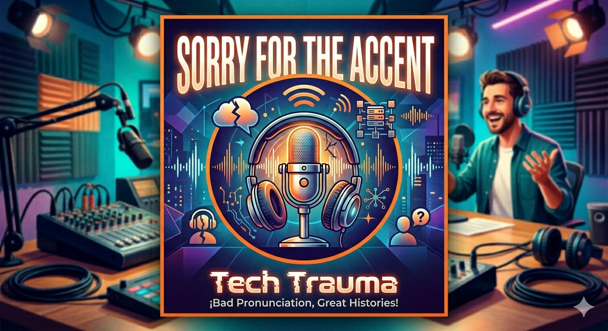

To improve speaking fluency and vocabulary through image description.
I selected different images and described what I could see using complete sentences in English.
In this image, I can see a group of students studying together. They are using laptops and taking notes in a classroom. The atmosphere looks calm and organized.
This strategy helped me improve my vocabulary and speaking confidence. I learned how to describe situations and people more clearly in English. I still need to improve pronunciation and sentence organization.
To improve pronunciation and listening comprehension.
I listened to short English audio clips and repeated the sentences aloud to imitate pronunciation and rhythm.
· Technology is changing modern education.
· English helps people communicate internationally.
· Students use digital platforms every day.
This strategy helped me improve pronunciation and listening skills. I learned how some words are connected in spoken English. I still need to continue practicing speed and fluency.
To improve spontaneous speaking and opinion expression.
I recorded short opinions about technology, education, and environmental problems.
In my opinion, technology is very important for education because it helps students access information more easily. I also think English is necessary for professional growth.
This strategy helped me organize my ideas when speaking. I improved my confidence expressing opinions in English. I still need to work on grammar and pronunciation.
To practice future structures in spoken English.
I recorded myself talking about future plans using will, be going to, and would.
After graduation, I am going to continue studying software development. I think technology will create more job opportunities in the future. If I had the opportunity, I would work for an international company.
This activity helped me practice future grammar structures naturally. I improved my ability to speak about goals and future situations. I still need to improve fluency and confidence during long conversations.
You will work in small groups to create and present a podcast in English. Each group member will be responsible for one assigned section of the podcast. Before the presentation, the group must prepare a script describing the content and development of each section.

I. Multiple Choice Corrections
II. Corrected Answers
I. Reading
II. WRITING (Campaign Speech – Public Safety and Insecurity)
Good morning everyone.
Today, insecurity is one of the biggest problems in many cities around the world. Many people are afraid of robbery, violence, and crime in their neighborhoods. Insecurity affects families, businesses, and the quality of life of communities.
As future leaders, we are going to create stronger community safety programs and improve public security in vulnerable areas. We are going to increase police presence in dangerous neighborhoods and install more security cameras in public places. In addition, we are going to create educational and sports programs for young people to prevent violence and criminal activities.
We will protect citizens by promoting respect, equality, and cooperation between communities and authorities. We will support victims of violence and create better opportunities for young people. Our government will invest in safer public transportation and better emergency systems.
Next month, we are meeting with local organizations and community leaders to discuss new strategies to reduce insecurity. We are organizing safety campaigns in schools and neighborhoods to promote prevention and responsibility. We are also creating community activities to improve trust between citizens and the police.
If these plans were successful, people would feel safer and communities would become more united. Crime would decrease, and citizens would have a better quality of life in the future.
At the beginning of the course, my main objective was to improve my speaking confidence and writing organization in English. During the semester, I improved my vocabulary, pronunciation, and grammar through different activities and strategies. I now feel more confident reading and understanding texts in English, and I can express my ideas more clearly than before.
However, I am still in the process of improving my fluency and speaking confidence. Sometimes I still feel nervous when speaking English, especially in spontaneous conversations. I also need to continue practicing grammar and sentence structure to avoid mistakes.
In conclusion, this course helped me develop better communication skills and become more aware of my strengths and weaknesses in English. I understand that learning a language is a continuous process, and I want to continue improving in the future.